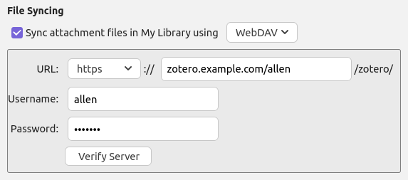
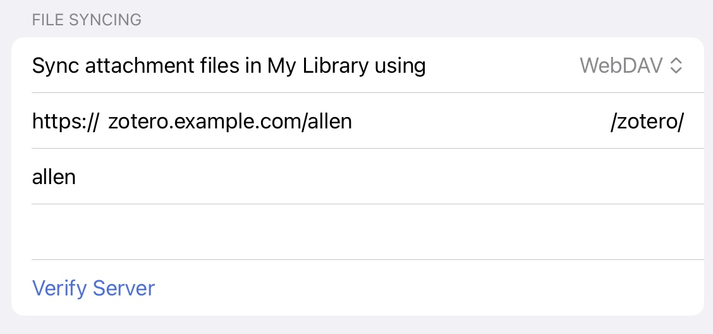

Using Caddy as a WebDAV server for Zotero
A couple years ago, I bought an iPad to read journal articles with Zotero, a free and open-source reference manager (available on every major platform) that helps you “collect, organize, annotate, cite, and share research.” I immediately encountered a big problem: I couldn’t access any of the attachments for the references in my library.
Zotero storage
When you add a reference to your Zotero library, the reference content (e.g. PDF of the article, book, etc) is saved to your computer. If you use Zotero from multiple devices (e.g. different computers, iPad, etc.), you will likely want to access that stored PDF from all of your devices. So, Zotero offers a built-in cloud storage service to sync PDFs and other attached content in your library between devices; the free tier has 300Mb of storage, but they offer paid tiers for 2 Gb, 6 Gb, and “unlimited” storage. For years, the size of all the attachments in my library has been well over the free storage provided by Zotero (I have ~2500 references and 2.5Gb of attachments). However, the 6 Gb and unlimited storage tiers have much more storage than I currently need and/or are more expensive than I would like1. Because of this, I’ve been storing my reference attachments in Dropbox for years2. However, the Zotero iOS app does not support using Dropbox for storage.
Thankfully, Zotero supports an alternative file syncing method, WebDAV, which is a file server you can run yourself. Here’s how I setup a self-hosted WebDAV server to store the PDFs in my Zotero library.
The WebDAV server
I initially tried to setup an Apache WebDAV server, but after spending several hours without much success, I discovered that there is a WebDAV module for Caddy. Caddy is a powerful server with a very simple configuration system. I was already somewhat familiar with Caddy from setting up a Home Assistant server, and I soon had a functioning Caddy WebDAV server! The configuration was simpler than the setup guide(s) I had been following for Apache, and Caddy is also great because it has automatic HTTPS3.
The WebDAV module for Caddy isn’t built in, so visit the Caddy downloads page and add the WebDAV module, or you can use xcaddy to build it yourself4:
$ xcaddy build --with github.com/mholt/caddy-webdavHere is the entire Caddyfile configuration for a WebDAV server:
Caddyfile
localhost:8337 {
1 root * /location/of/your/files
encode gzip zstd
handle /webdav/* {
route {
2 basic_auth {
# your-username your-password-hash
allen $2a$14$0PDIH55BWjgFKdh23tL3nuga1mjVy29lJtXMtaheIUxMz.oPO72a2
}
rewrite /webdav/zotero /webdav/zotero/ # add a trailing slash if missing
3 webdav /webdav/zotero/* {
prefix /webdav/zotero/
}
}
}
respond 404 # all requests not to `/webdav/*` get a 404
}- 1
-
The
rootdirective sets the base directory that all other matchers and directives will be relative to. - 2
-
The
basicauthdirective will only allow someone with the right username and password to access your files. The username can be anything, while the password hash is generated by the interactivecaddy hash-passwordcommand. You will be asked to enter your password5, and then it will print the hash for you to copy-paste into theCaddyfile. (The password hash in the example file is for the passwordhunter2.) - 3
-
The webdav module adds the WebDAV functionality. Zotero implicitly adds a
"/zotero/"suffix to any WebDAV URL, so the matcher after thewebdavmust always end with"/zotero/". Theprefixdirective is optional, depending on if you don’t want your Zotero attachments nested under azoterofolder (or whatever you have as the matcher afterwebdav) within/location/of/your/files.
You should now have a functioning WebDAV server! You can test it by running curl --user allen:hunter2 https://localhost:8337/webdav/zotero/ -X PROPFIND6 on your server. However, this server is only accessible locally, which won’t be very useful. Enter Cloudflare Tunnel!
Cloudflare Tunnel
Cloudflare Tunnel lets you route traffic to and from your local server through Cloudflare’s network. This lets you make your server publically accessible on the Internet without opening/forwarding a port on your router or needing to set up dynamic DNS.
First, you will need a (free) account with Cloudflare. Then follow Cloudflare’s guide to creating a tunnel, via the CLI or via their web dashboard. The Cloudflare guide will walk you through installing the cloudflared process and creating a tunnel.
cloudflared as a service!Your tunnel configuration file should look like this (except with your own, real UUID’s of course):
config.yml
- 1
-
hostnameis the public hostname that you will tell Zotero to connect to. - 2
-
serviceis the location that your Caddy server is responding to/from. It must (afaict) be a port onlocalhost. The protocol can behttp://...unless you want to (optionally) encrypt your internal traffic, where it would need to behttps://.... Either way, it should match your Caddy configuration; without an explicithttp://prefix, Caddy will default to https and generates a self-signed certificate. - 3
-
Setting the
originRequestconfiguration isn’t needed unless you are using https betweencloudflaredand Caddy. If you want your internal traffic (between the Cloudflare tunnel and your Caddy server) to be encrypted7, you can use either a self or CA signed certificate:- By default, Caddy will automatically generate a self-signed certificate for
localhostaddresses. The aboveCaddyfileand tunnelconfig.ymlfiles are showing this setup. ThenoTLSVerify: truestopscloudflaredfrom attempting to verify the self-signed certificate. - To use a CA signed certificate, you will need to configure Caddy appropriately for your CA (tutorials abound), and set an appropriate address in your
Caddyfile. It must be different than the hostname of your tunnel (which will already have a certificate generated by Cloudflare). Then set thehttpHostHeaderandoriginServerNameoptions in your tunnelconfig.ymlto the address in yourCaddyfile.noTLSverifyis not necessary for this configuration.
- By default, Caddy will automatically generate a self-signed certificate for
- 4
- This configures the tunnel to respond to any other requests with a 404.
Now that your WebDAV server is publically accessible, configure Zotero to use your server for file syncing. On the desktop, this is Edit -> Settings -> Sync -> File Syncing. On iOS, this is < Back, then the gear/settings icon, Account -> File Syncing. Then change the “Sync attachment files in My Library using” to "WebDAV", and enter your Cloudflare Tunnel domain and credentials for your Caddy server. Don’t forget to confirm it works by clicking the “Verify server” button!


Enjoy your self-hosted Zotero storage! I’ve been running this setup on a Raspberry Pi-type single-board computer for almost 2 years with basically no maintenance and no downtime, besides updating Caddy and cloudflared occasionally. My Cloudflare tunnel even seamlessly dealt with a cross-country move to a new/different router with no reconfiguration needed.
Footnotes
The paid cloud storage tiers are the source of nearly all of the funding for the Zotero project, but I have a limited budget as a grad student. Please consider paying for storage if you have the means.↩︎
This is generally a bad idea. Things can get out of whack if you have Zotero open on multiple devices at the same time and are making changes in Zotero (e.g. adding a reference) on both devices.↩︎
Apache also supports automatic HTTPS, but it is not enabled by default (at the time of setup in the default Arch Linux install; circa fall 2022). However, Caddy’s support for automatic HTTPS is potentially irrelevant to the final server setup.↩︎
When I tried the Caddy downloads page, my build/download requests kept timing out for the platform (ARM 7) and modules I had selected.↩︎
Make it a strong password! I recommend using a password manager like KeePassXC.↩︎
This command asks the server for the properties of the files under
/location/of/your/files. The response will be empty if there are no files there, and otherwise will return an XML object for each file. The exact response doesn’t matter, as long as the command shows a successful connection/200 status.↩︎My intuition is that this is not necessary or helpful from a security perspective; you probably have bigger problems if an attacker is able to eavesdrop on traffic internal to your server.↩︎